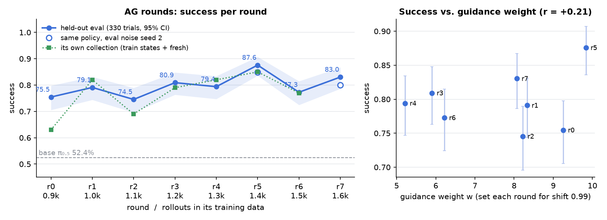
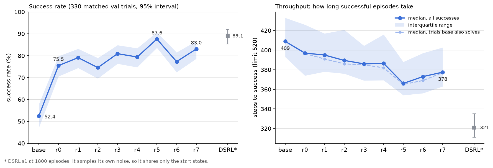
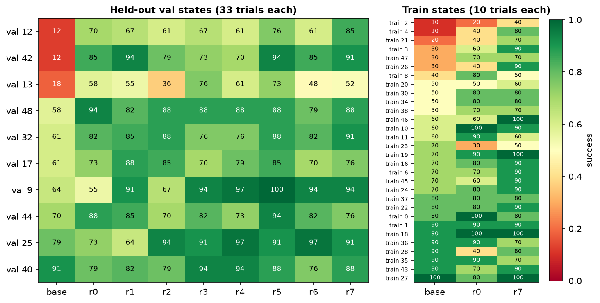
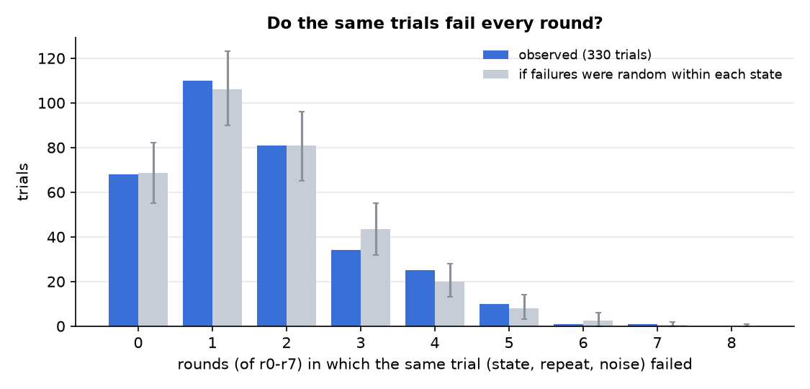
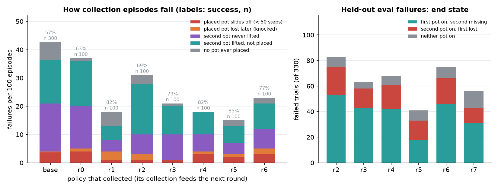
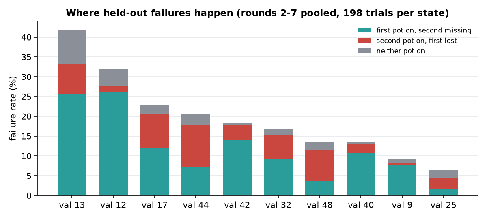
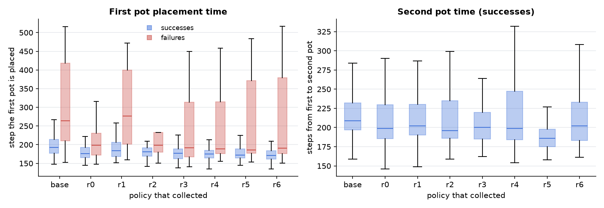
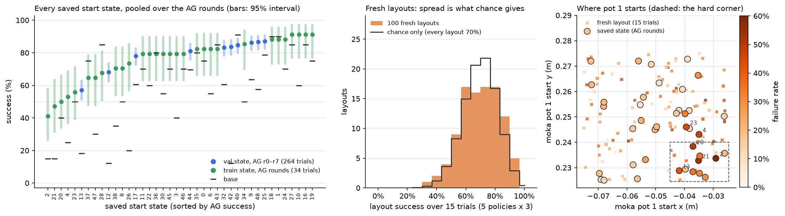
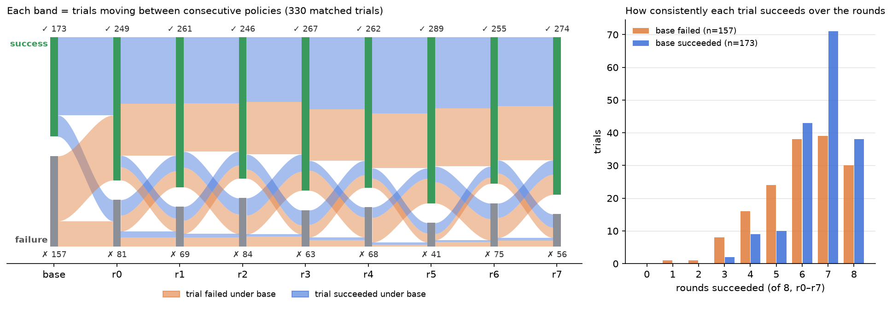
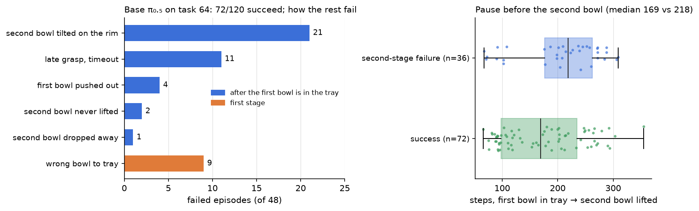

LIBERO moka pots (libero_10 task 8, π₀.₅ pi05_libero): eight AG rounds, where the failures are, and the new setup after the Nov 14 feedback
Summary
Base π₀.₅
52.4%
173 / 330 held-out trials
AG, best round (r5)
87.6%
84.8% with a second eval noise seed
AG, latest round (r7)
83.0%
1.6k rollouts; 80.0% with noise seed 2
Train states, r7
79.7%
base 61.7%; 1 of 30 states below 50% (base: 7)
After round 0, AG rounds move up and down by several points instead of climbing steadily. Rounds 0–7 scored 75.5, 79.1, 74.5, 80.9, 79.4, 87.6, 77.3 and 83.0%. The swings are real differences between policies, not eval noise: each round's own collection, on different start states, moves with its eval (correlation 0.78). Each round retrains the residual head from zero, so training randomness is the likely cause. The guidance weight explains little (r = 0.21). Round chart →
The failures look random within each start state. Matched-noise trials repeat across rounds, and the number of rounds each trial failed matches what independent failures at each state's rate would give. No trial failed in all 8 rounds. No start state is at 0%, out of the 10 val states and 30 train states. This agrees with your guess that every state with a non-zero success rate keeps improving. Persistence chart →Per-state chart →
What is left is mostly the second pot. Over the rounds the first pot gets placed sooner (median step 193 for base → 171 by round 6). The second pot still takes about 200 steps in every round. Most collection failures never lift the second pot or lift it without placing it. Val states 13 and 12 hold the most failures. Failure charts →Videos →
Meeting follow-ups (Nov 17): successful episodes get 8–10% faster over the rounds (DSRL: 21% faster than base). Pushing guidance harder than 0.99 lowers success on r5 and r7, so the ~85% plateau is not from too little guidance. No start state or fresh layout is at zero. The hard saved states share one corner of the second pot's start region, but fresh layouts there are only about 3 points worse. Queued: a direct w sweep on r5–r7, and DSRL to 3,600 episodes. Throughput →Push sweep →Buckets →
New setup, following your Nov 14 notes (round 0 done, round 1 starting): fixed budgets of 50, 100 and 200 episodes per round from round 0. Each chain's V is trained only on that chain's own data. Episodes start from continuous layouts, with a new continuous eval set. Alongside: an IQL version of AG, and a two-task test (moka + libero_90 task 64). Running now →
The new task (64, bowls into a tray) fails the same way as moka: base π₀.₅ succeeds on 60% of fresh layouts, and 39 of its 48 failures come after the first bowl is already in the tray. The second bowl lands tilted on the rim, or is grasped too late. 9 failures carry the wrong bowl to the tray first. Task 64 →
Quick results that did not change the direction: action imagination (no critic ranks the candidates, DSRL's included), robot state + subtask in the residual head (no gain), noisy judge (AG unaffected, DSRL breaks), DSRL seed 1 and distillation, and zima's π₀.₅ samples vary 4–6× more than LIBERO's. Quick results →
Unless noted, success is on the same 330 held-out trials: 10 val start states × 33, env seed 7, matched noise seed 1. The 95% interval is about ±4 points from trial noise alone. Every AG round is one training seed.
Running now: the setup after the Nov 14 feedback
Every chain runs the same loop as the AG rounds below: collect B episodes with the current policy → label (top 40% advantage within each round) → retrain the residual head from zero on all rounds → contrast check → evals. What changed:
Fixed budget from round 0. Round 0 is a nested subsample of the 900 base rollouts (50 inside 100 inside 200), so every round adds the same B. The goal is to compare total episodes and total rounds needed.
Chain-only V (suffix cv): V is refit each round on that chain's episodes only, as zima would have to do, instead of reusing the V fit on 900 base rollouts. On round 0 its correlation with the Monte Carlo return is 0.42 / 0.53 / 0.52 at B = 50 / 100 / 200, against 0.61 for the 900-rollout V.
Continuous layouts: collection uses only freshly sampled layouts (see below).
100 per round, V fit on 900 base rollouts (reference ceiling for b100cv)
79.7%
77.3%
round 1 trained; check and evals waiting for a GPU
b100iql
IQL critic (twin Q + expectile V, τ 0.9) per round, labels from Q − V; same round-0 data as b100
63.9%
66.0%
round 1 waiting for queue room
mt100cv
50 moka + 50 task-64 episodes per round, one shared V, one policy
pending
round 0 trained; contrast check running
t64b50cv / t64b100cv
task 64 alone (single-task controls for the two-task chain)
pending
round 0 trained; checks and evals waiting for a GPU
State as of Nov 17, 20:45 PT. My jobs are now capped at 6 GPUs at a time: the rest wait in the queue on hold and start as GPUs free up, high-priority (iris-hi) jobs first, then oldest first.
Task 64 = libero_90 "stack the right bowl on the left bowl and place them in the tray", base π₀.₅ 40% at 520 steps (60% on 120 fresh layouts; failures below). Its outcome is not fixed by the start state (repeats agree 56% vs 52% by chance), so AG has room on every state.
Not set up yet: best-of-N with the IQL Q (needs the b100iql critics), and mid-task starts (code and replay test done, held until the longer runs are in).
Queued after the Nov 17 meeting
Guidance weight w swept directly on rounds 5, 6 and 7: w = 1, 2 and 4 on each round (9 evals), plus round 6 at the push levels already run on r5 / r7 (0.8 and 1.2). w = 0 is base π₀.₅ exactly (52.4%). Together with the push sweep (w ≈ 5–18 on r5 / r7, results so far below the throughput chart), this covers w from 0 to 18. Same 330 matched trials, high-priority queue.
DSRL run further: seed 1 resumes from its saved state at 1,800 episodes and trains to 3,600 on the same 30 train states (high-priority queue, up to 3 days), with evals at 2,400, 3,000 and 3,600 episodes. So far: 87.0% at 1,300 and 89.1% at 1,800 on the val trials, while its own training-collection success has been flat at 79–82% for the last 800 episodes.
200 episodes per round, several rounds: already running as the b200cv chain above (rounds go on automatically).
AG rounds 0–7 (900 base rollouts + 100 per round)

Left: held-out success per round (blue, 95% CI). Open circles: the same policy re-evaluated with eval noise seed 2 (r5 87.6 → 84.8, r7 83.0 → 80.0), so eval noise is about 3 points.
Green: success of each round's policy on its own collection (60 train-state + 40 fresh-layout episodes, different from the eval states). It rises and falls with the eval (r = 0.78), so the swings are differences between the policies themselves.
Right: the guidance weight w is recalibrated each round to hit an action shift of 0.99; it ranged 5.2–9.8 and barely tracks success.

Throughput alongside success rate. Same 330 matched val trials. Right: steps taken by successful episodes (time limit 520), median with the interquartile band.
Successful episodes get faster over the rounds: median 409 steps for base, 397 at r0, 366 at r5 and 378 at r7, about 8–10% faster. The dashed line takes only trials that base also solves (r5: 365 against base's 409 on the same 151 trials). It matches the solid line, so the speed-up is not because later rounds solve a different mix of trials.
Throughput follows success: the best round (r5) is also the fastest, and r6 dips on both.
DSRL (s1, 1,800 episodes; it shares the start states but not the noise) is much faster, at a median of 321 steps (21% faster than base). Successes per 1,000 env steps: base 1.13, r5 2.22, r7 2.03, DSRL 2.56.
The speed-up in the AG rounds comes from the first pot: it is placed sooner (below), while the second pot takes as long as before.
Is a push of 0.99 still right for later rounds? (sweep in progress)
Push = action shift ÷ sampling noise; w is set each round to hit it. Same 330 matched trials, so each cell is paired with the 0.99 eval (trials gained / lost against 0.99):
Push
r5 (w)
r5 success
r7 (w)
r7 success
0.99 (used every round)
9.8
87.6%
8.1
83.0%
1.2
11.9
84.8% (+27 / −36)
9.8
80.9% (+37 / −44)
1.5
14.9
83.5%* (+34 / −48)
12.2
78.4%* (+25 / −34)
1.8
17.9
80.2%* (+8 / −14)
14.7
74.8%* (+16 / −21)
0.8 / 0.6, and w = 1, 2, 4 on r5–r7
queued
* still running: r5 1.5 at 327 / 330 trials, r5 1.8 at 86, r7 1.5 at 227, r7 1.8 at 115 (the comparison uses the same finished trials).
Pushing harder than 0.99 gets worse on both rounds, a few points per step. No single step is outside trial noise, but the trend is the same on both rounds. So the plateau near 85% is not from too little guidance. Whether a weaker push does better is what the queued runs answer.

Left: val states (33 trials each). Round 0 lifts base's three hard states (12, 13, 42: 12–18%) to 58–85%, and later rounds do not keep raising them. State 13 goes 58, 55, 36, 76, 61, 73, 48, 52%.
Right: the 30 train states, 10 trials each (base, r0, r7 done; the other rounds' train-state evals were cancelled to free the queue). The gain from base to r7 is largest where base was weakest (correlation −0.79): state 4 10 → 80%, state 26 30 → 90%. Only state 2 stays low (40%).

With matched noise, trial (state, repeat) sees the same start and noise in every round. Blue: how many of rounds 0–7 each trial failed. Grey: what you would expect if each trial failed independently at its state's average rate (2,000 simulations, 95% range).
The two agree closely: 68 trials never failed (69 expected), and 2 failed in 6 or more rounds (2.9 expected). No trial is stuck. The failures come from a state-level rate plus chance.
What the round charts suggest
Make rounds less noisy before reading the trend. Options: warm-start each round's head from the previous one instead of from zero, train 2 seeds per round and keep the better one, or both. The policy's own collection success is a free selection signal (r = 0.78 with the eval), and zima would have it too.
The weak states improve on average but are not solved. The next gain is in states 13 and 12 (val) and 2 (train), all second-pot failures (below). This is where mid-task starts would put their data.
Caveat: one seed per round; round 0's head starts from 900 base rollouts and the V is frozen. The fixed-budget chains above remove both.
Failure analysis: where the failures are
Every failure is a 520-step timeout. Two sources: the collections (100 episodes per round, train states and fresh layouts, with the full simulator state per step) and the held-out evals (end state only). The first pot placed is the left pot (moka_pot_2) in 95% of collection episodes. So an eval ending with only the left pot on means "second pot missing", and only the right pot on means "first pot lost".

Left: collection failures per 100 episodes, one class each, from the goal predicates and pot positions. A pot counts as placed after 10 steps on the stove and as lost after 20 steps off. "Slides off" = lost within 50 steps of being placed.
Base fails 43 per 100: 17 never lift the second pot, 15 lift it without placing it, and 6 never place any pot. Rounds 1–6 fail 15–31 per 100, and the second pot is still 9–25 of them. Pots lost after placement stay at 1–5 per 100.
Right: held-out failures (rounds 2–7; earlier evals did not record the end state). "First pot on, second missing" is the largest group every round. Round 5's drop is mostly in that group (42 → 18).
Round 7 has the most "neither pot" failures (13).

Per val state, rounds 2–7 pooled (198 trials each). States 13 (42% failures) and 12 (32%) are mostly second-pot failures. At states 44 and 48, half or more of the failures are "second pot on, first lost": the first pot leaves the stove while the second is placed.
Easy states (25, 9) fail 7–9%.

Left: rounds make the first pot faster. The median placement step for successes is 193 for base and 171–177 for rounds 3–6. Failures place it later, with a long tail (some only after step 300), so part of the failures run out of time already at the first pot.
Right: the second pot takes a median 186–209 steps in every round, with no trend. The rounds train on the whole episode, but the extra skill they add sits in the first half.
Do the rounds fix both failures?
The rounds help the second pot a lot. They do not fix the falling first pot, which stays at about the same rate in every round and becomes a bigger share of what is left.
Collected by
Second pot placed, once the first is on
Second-pot failures / 100
First pot falls off / 100
No pot at all / 100
base
64%
32
4
6
r0
68%
31
5
1
r3
81%
19
1
1
r5
90%
10
3
2
r6
83%
16
5
2
Second pot: better, but still the largest group. Failures fall from about 32 per 100 to 10–16, and the gain goes up and down with the round-to-round swings (rounds 2 and 6 are worse than rounds 1 and 5).
First pot falling off: no change. In collections it stays at 1–5 per 100 in every round, about the same as base. In held-out evals, "second pot on, first lost" happens in 12–22 of 330 trials in every round from r2 to r7, with no trend. Its share of failures grows from 9% for base to about 20% in rounds 4–6 (37% of round 5's eval failures, 15 of 41).
How it falls shifts a little: base pots mostly slide off right after being set on the stove edge. After the rounds it is split about evenly between that and the arm knocking the pot off later, while working on the second pot. The counts are small (1–3 per round), so this is a hint only.
What is left at round 5 (the best): about 15 failures per 100. About 10 are the second pot (never lifted, or lifted but not placed in time), about 3 are the first pot falling off (mostly val states 44 and 48), and about 2 never place a pot.
"Falls off" here means the pot's "on the stove" predicate stays off for 20+ steps after it was placed. The Nov 14 analysis used a looser rule (the pot leaves the cooking area within 50 steps of release) and found more drift (9 of 29 AG failures), so 1–5 per 100 is a lower bound. By either rule, the second pot is the bigger problem.
Reading
The bottleneck is the second grasp-and-place. The policy does not lose pots it has placed (except at states 44 and 48), and it rarely places no pot at all.
This matches the Nov 14 video review on val states: hovering at the second pot, missed grasps. The Nov 14 train-state analysis had stove-edge drift as the largest single class. The rule here only counts a pot whose "on the stove" predicate stays off for 20+ steps, so it counts fewer drifts (1–4 per 100).
Possible next steps, roughly in order: (1) run longer with less round-to-round noise (above); (2) mid-task starts at the second pot, so each round sees many more second grasps; (3) follow states 13 and 12 in the continuous set, where they are no longer a fixed list.
The falling first pot needs a different fix, because more rounds do not change it. Candidates: a stricter success label that counts edge placements as failures (built Nov 15, then cancelled because it is task-specific), or more weight on how the first pot is placed.
Start-state buckets: which starts stay hard
Following the meeting: treat each start as a bucket, use the repeats in it, and look at the ones that stay low. The saved LIBERO start states already are buckets (10 val states × 33 trials per policy, 30 train states). The 100 fresh layouts of the continuous set are buckets of 15 trials (5 round-0 chain policies × 3).

Left: all 40 saved states, AG rounds pooled (val: r0–r7, 264 trials each; train: r0 / r7 train-state evals + the round collections, 34 each). Dashes: base. Middle: the 100 fresh layouts against what chance alone would give if every layout had the same 70% rate. Right: where moka pot 1 starts (the pot picked second; it is the left pot in the camera view). Circles: saved states. Squares: fresh layouts. Darker = more failures.
What the buckets show
No bucket is at zero. The hardest saved states are 2 (41%), 21 (47%), 20 (50%), 4 (53%), 23 (56%) and 13 (57%, the val state with the most trials). The hardest fresh layout succeeds 5 of 15 times. So the ceiling is not a set of impossible starts.
Saved states do differ beyond chance; fresh layouts barely do. Across the val states, success varies 3.4× more than chance alone within r7, and 14× more with r0–r7 pooled. Across fresh layouts it varies 0.97–1.07× chance for each policy (1.26× pooled). On fresh layouts, which trial fails is close to a coin flip at the policy's rate.
The hard saved states share one corner of pot 1's start region (x > −0.045, y < 0.24; dashed). The 10 saved states there succeed 62.6% under AG and 31.4% under base. The other 30 succeed 82.9% and 65.2%. The 10 fresh layouts in the same corner succeed 66.7%, against 70.1% elsewhere, only about 3 points lower. So the corner is not the whole story. One other difference: saved states start the arm from a slightly perturbed joint pose, while fresh layouts all start from the default pose, and among saved states a larger arm offset goes with lower success (r = −0.34). This is suggestive, not established.
Implication for the ceiling: on fresh layouts, a remaining failure is not tied to a start, so more data of the same kind should keep helping, slowly. On the saved states, part of the gap is specific starts. A cheap test: rerun the 6 hardest saved states with the arm at its default pose, or fresh layouts in the corner with the arm perturbed.
Val state 13: how its failures look
Top row: the same matched trial (21) in rounds 5, 6 and 7. It fails the same way each time: the second pot is grasped late (about step 400), carried in, and set down on the front of the stove, where it pushes the first pot off. Bottom row: r7 trial 0 sets the first pot on the back rim of the stove and keeps holding it there until time runs out. r6 trial 2 places the first pot, then goes back for the second pot only around step 440 and runs out of time. r5 trial 1 succeeds, with the second pot grasped by about step 240. Across r5–r7, state 13's 41 failures are 23 second pot missing, 11 no pot on and 8 first pot lost.
Video gallery: the same trial across rounds
Each clip is one held-out trial played by three policies side by side. With matched noise, every policy gets the same start state and the same sampling noise, so the only difference is the policy. Clips play at 2× with a step counter. A policy that finishes early holds its last frame.
In the strips: ✓ success · ✗ failed (end state not recorded for base, r0, r1) · 2 = second pot missing · 1 = first pot lost · 0 = no pot on. The policies shown are in bold.
How trials move from base through the rounds

Left: each column is a policy; the green bar is the trials it succeeds on, the grey bar the trials it fails. Bands carry trials from one policy to the next, orange if the trial failed under base, blue if it succeeded. Bands crossing between the bars are trials that flip.
Right: how many of the 8 rounds (r0–r7) each trial succeeds, split by its base outcome.
Base → r7
Trials
Share
✓ → ✓ (kept)
145
44%
✗ → ✓ (fixed)
129
39%
✗ → ✗ (still failing)
28
8%
✓ → ✗ (lost)
28
8%
Reading the progression
Most of the change happens at round 0. 113 of the 157 base failures already succeed at r0. After that, the bars only move between 246 and 289 successes.
Comparing base with r7 only: the most common case is "succeeded both times" (44%), then "base failed, r7 succeeds" (39%). Of the 157 base failures, 129 (82%) succeed at r7. But 28 base successes fail at r7, the same number as base failures still failing.
Few trials follow a clean path. Only 30 base failures succeed in all 8 rounds, and only 38 base successes stay successful in all 8. The other 262 trials (79%) succeed in some rounds and fail in others. There are 118 distinct success/fail paths across the 9 policies. Between consecutive rounds, 34–64 trials go from success to failure and 30–63 go the other way.
No trial is hopeless. Every base failure succeeds in at least one round. Most succeed in 5–8 of the 8 rounds, so the typical base failure becomes "usually succeeds", not "always succeeds".
Fixed at round 0, and stays fixed
val state 42, repeat 5 · shown: base / r0 / r7 (left to right) all policies: base ✗ · r0 ✓ · r1 ✓ · r2 ✓ · r3 ✓ · r4 ✓ · r5 ✓ · r6 ✓ · r7 ✓
What happens: Base places the first pot late (about step 300). It is still carrying the second pot when time runs out. Round 0 and round 7 place the first pot by about step 200 and finish at about step 390.
What it says about the method: This is most of round 0's jump from 52% to 75%: the residual makes the first half faster and more decisive. 30 of the 330 trials look like this (base fails, every round succeeds).
Second pot fixed by the rounds
val state 12, repeat 11 · shown: base / r2 / r5 (left to right) all policies: base ✗ · r0 ✗ · r1 ✗ · r2 2 · r3 ✓ · r4 0 · r5 ✓ · r6 ✓ · r7 ✓
What happens: All three place the first pot by about step 200. Base and round 2 then hover over the second pot for about 200 steps and only lift it at the time limit. Round 5 grasps it right away (step ~320) and finishes at step 370.
What it says about the method: This is what the rounds add: fewer hovers at the second pot (collection second-pot failures 32 → 10–16 per 100). The later rounds train on many more rollouts that reach the second pot.
Traded one failure for another
val state 13, repeat 21 · shown: r2 / r5 / r7 (left to right) all policies: base ✗ · r0 ✗ · r1 ✓ · r2 2 · r3 ✓ · r4 2 · r5 1 · r6 1 · r7 1
What happens: Round 2 hovers over the second pot until the limit. Rounds 5 and 7 do grasp it, but late (step ~430–460). When they set it down on the small stove, they push the first pot off.
What it says about the method: The rounds fixed the grasp but not the placement. Nothing in our labels says "don't hit the pot that is already there": the success label only sees the end, and the advantage labels follow V. This is the "first pot falls off" failure that stays flat across rounds.
Same trial, different outcome every other round
val state 44, repeat 19 · shown: r4 / r5 / r6 (left to right) all policies: base ✗ · r0 ✓ · r1 ✓ · r2 1 · r3 ✓ · r4 1 · r5 ✓ · r6 1 · r7 ✓
What happens: The start state and the noise are identical. Round 5 grasps the second pot quickly and places it cleanly (success at step 333). Rounds 4 and 6 hover first, grasp late, and push the first pot off while placing.
What it says about the method: This is the round-to-round swing on one trial: small differences between retrained heads decide whether the second grasp comes quickly. It supports making rounds less noisy (warm start, or keep the better of two seeds) rather than tuning for this state.
Got worse in later rounds
val state 17, repeat 9 · shown: r5 / r6 / r7 (left to right) all policies: base ✓ · r0 ✓ · r1 ✓ · r2 ✓ · r3 ✓ · r4 ✓ · r5 ✓ · r6 2 · r7 2
What happens: Base and rounds 0–5 all succeed. Round 5 finishes at step 374. Round 6 hovers over the second pot until the limit. Round 7 picks it up and sets it down, but not on the counted cooking area: it ends next to the first pot.
What it says about the method: Each round retrains the head from zero on all data, so a trial that was already solved can be lost. This is rare: it is the only trial that succeeds for base through r5 and fails at both r6 and r7.
The hardest trial: fails a different way each round
val state 13, repeat 13 · shown: base / r5 / r7 (left to right) all policies: base ✗ · r0 ✗ · r1 ✗ · r2 2 · r3 0 · r4 ✓ · r5 1 · r6 1 · r7 2
What happens: Base hovers over the second pot from about step 340 to the end. Round 5 grasps and places it (step ~400), then keeps pushing at the stove until the first pot is off. Round 7 keeps adjusting the first pot on the stove for about 200 steps and only goes for the second pot at the end.
What it says about the method: Val state 13 (42% failures in rounds 2–7) has no single failure to target, but every version is a second-stage problem. Mid-task starts at the second pot would give the rounds many more examples of exactly this stage.
What the videos say
Round 0's gain is speed in the first half: the first pot goes on about 100 steps sooner, which leaves time for the second.
The later rounds' gain is a quicker second grasp: less hovering over the second pot.
What is left: hovering that still happens in some rounds, and late second grasps that crowd the stove and push the first pot off. The second is the failure the rounds do not fix.
One trial can succeed in one round and fail in the next, as the persistence chart showed: failures are random within a state, and the retrained head decides how quickly the second grasp comes.
Methods side by side: same trial, six policies
Six policies on the same 330 held-out trials, from weakest to strongest. AG with shuffled labels is the control: the same residual head trained on randomly permuted good/bad labels. RECAP tag is the earlier approach: fine-tune π₀.₅ with an advantage tag in the prompt. Then base π₀.₅, AG round 0, AG round 5 (the best round) and DSRL (noise-space RL on frozen π₀.₅). All but DSRL use matched noise, so they see the same start and the same sampling noise. DSRL picks its own noise and shares only the start state.
Policy
Success (330)
Base failures fixed (of 157)
Base successes lost (of 173)
AG, shuffled labels
18.5%
24
136
RECAP tag
45.8%
61
83
base π₀.₅
52.4%
–
–
AG r0
75.5%
113
37
AG r5
87.6%
138
22
DSRL
86.1%
126
15
AG r5 and DSRL succeed equally often but on different trials. Both succeed on 251, only AG r5 on 38, only DSRL on 33, and both fail on 8 (5.7 expected if their failures were unrelated).
Val state
AG, shuffled labels
RECAP tag
base π₀.₅
AG r0
AG r5
DSRL
9
24
24
64
55
100
91
12
0
33
12
70
76
58
13
55
45
18
58
73
85
17
12
18
61
73
85
97
25
21
64
79
73
91
76
32
12
61
61
82
88
97
40
48
64
91
79
88
100
42
0
6
12
85
94
79
44
3
70
70
88
94
88
48
9
73
58
94
88
91
Success % per held-out state (33 trials each). Base's hardest states (12, 13, 42) are where the strong methods gain most. On these, AG r5 is ahead on 12 (76 vs 58) and 42 (94 vs 79), and DSRL is ahead on 13 (85 vs 73).
Each clip: top row = shuffled-label AG, RECAP tag, base; bottom row = AG r0, AG r5, DSRL. Played at 2×; a finished episode holds its last frame.
Base fails, the three strong methods succeed
val state 42, repeat 12 · AG, shuffled labels ✗ · RECAP tag ✗ · base π₀.₅ ✗ · AG r0 ✓ · AG r5 ✓ · DSRL ✓
What happens: base places the first pot by about step 180, then hovers over the second pot until about step 480 and times out while placing it. RECAP hovers the same way. The strong methods differ only in how long they hover: AG r0 finishes at 471, AG r5 at 370, DSRL at 305. Shuffled-label AG grasps the first pot and then freezes beside it for the whole episode.
What it says: the gain from AG and DSRL is mostly a shorter pause before the second grasp, the same thing the round gallery showed.
Base succeeds, the two weak fine-tunes fail
val state 44, repeat 21 · AG, shuffled labels ✗ · RECAP tag ✗ · base π₀.₅ ✓ · AG r0 ✓ · AG r5 ✓ · DSRL ✓
What happens: base and the strong methods all finish at steps 328–404. RECAP places the first pot and then hovers over the second until time runs out. Shuffled-label AG places the first pot late (~240), grasps the second and lifts it away from the stove, holding it in the air until the end.
What it says: a bad training signal does not cause new kinds of failure. It makes the second stage worse: more hovering (RECAP), or carrying the pot the wrong way (random guidance direction).
AG succeeds, DSRL fails
val state 12, repeat 9 · AG, shuffled labels ✗ · RECAP tag ✗ · base π₀.₅ ✗ · AG r0 ✓ · AG r5 ✓ · DSRL ✗
What happens: AG r5 grasps the second pot around step 250–300 and finishes at 337; AG r0 at 429. DSRL places the first pot on time but reaches the second pot only around step 400, and is still setting it down at 520. Base hovers over the second pot from about step 300 to the end.
What it says: state 12 is AG's best state relative to DSRL (76% vs 58%). There, DSRL's failure is the same late second grasp, only less often.
DSRL succeeds, AG r5 fails
val state 13, repeat 18 · AG, shuffled labels ✗ · RECAP tag ✗ · base π₀.₅ ✗ · AG r0 ✓ · AG r5 ✗ · DSRL ✓
What happens: DSRL finishes at 347 and AG r0 at 434. AG r5 places the first pot by ~180, then stays at the second pot from about step 360 to the end without lifting it. Base and RECAP hover there too. Shuffled-label AG is slow on the first pot (~420) and is lifting the second at 520.
What it says: the same failure, now hitting AG instead of DSRL. In both methods the leftover failures are a late second grasp, but on different trials.
The only trial every method fails
val state 12, repeat 10 · AG, shuffled labels ✗ · RECAP tag ✗ · base π₀.₅ ✗ · AG r0 ✗ · AG r5 ✗ · DSRL ✗
What happens: every policy except shuffled-label AG places the first pot, then each fails in its own way. Base and RECAP hover. AG r0 hovers until the end. AG r5 grasps the second pot at ~360, and setting it down knocks the first pot over (it lies on its side next to the stove from ~480). DSRL grasps at ~420 and is still placing at 520. Shuffled-label AG freezes after grasping the first pot, as in the other clips.
What it says: even the hardest trial is a second-stage problem: timing for DSRL and AG r0, crowding the stove for AG r5.
What the methods comparison says
Every policy fails at the same place, the second pot. The weak ones also fail at the start: shuffled-label AG often freezes after grasping the first pot. The ranking is mostly about how long each policy hovers before the second grasp.
AG r5 and DSRL reach the same level but miss different trials. Few trials beat both (8), so no hard core is left. The remaining failures look like chance in the second-stage timing, as in the persistence chart.
The shuffled-label control (18.5%) shows that the labels carry the gain. The same head with random labels is far below base, so AG's improvement comes from the advantage labels, not from the residual head itself.
Knocking the first pot off is not specific to AG. In these clips only AG r5 does it. But DSRL loses the first pot about as often: in its seed-1 eval (89.1%), 13 of 36 failures end that way, against 15 of 41 for AG r5. It is the failure the rounds did not fix (above), and DSRL does not fix it either.
New task 64: base rollouts and where they fail
Task 64 (libero_90): "stack the right bowl on the left bowl and place them in the tray". These are the 120 base π₀.₅ rollouts on fresh layouts that seed the task-64 chains (t64b50cv, t64b100cv and the task-64 half of mt100cv). 72 / 120 succeed (60%); on the 50 fixed start states base gets 40 / 100. Every failure is a 520-step timeout. Base works in two stages: the left bowl goes into the tray first (median step 116), then the right bowl is lifted (288) and stacked on it (331).

Left: the 48 failures, one mode each, from the goal predicates and bowl positions (blue = after the first bowl is already in the tray). Right: steps between "first bowl in the tray" and "second bowl lifted", for successes and for the blue failures.
Where the failures are
Most failures (39 / 48) come after the first bowl is already in the tray. This is the same shape as the moka task, where the second pot is the problem.
Largest mode, second bowl tilted on the rim (21): the right bowl is brought over the first bowl but lands half on its rim, not seated. The arm then backs off or keeps nudging until time runs out.
Late grasp, timeout (11): the arm waits over the tray before reaching for the second bowl. In failures the median wait is 218 steps, against 169 in successes. Time runs out while it is still carrying the bowl. This is the moka "hovering" again.
First bowl pushed out (4): placing the second bowl drags the tray or knocks the first bowl out of it, like the moka first pot being pushed off the stove.
Wrong bowl to the tray (9), the only first-stage mode: the right bowl goes to the tray first. The policy then either hovers over the other bowl or stacks the left bowl on top of the right one, in reverse order.
Second-stage failures, next to a success
base π₀.₅, three different fresh layouts (not matched trials) · A = train set A, B = train set B, number = episode
Left, success (A0): the left bowl goes into the tray, the right bowl is carried over and seated at step 242. Middle, tilted on the rim (B25): the first bowl is in the tray at step 113 and the right bowl is lifted at 289. It ends tilted on the first bowl's rim, and the arm backs away for the last ~150 steps. Right, late grasp (B11): the first bowl is in the tray by step ~110. The arm then waits until about step 400 before grasping the right bowl, and is still carrying it (tipping the tray) at step 520.
Wrong bowl first, and the first bowl pushed out
base π₀.₅, three different fresh layouts (not matched trials)
Left, wrong bowl (A18): the right bowl is carried to the tray first. The arm then hovers over the left bowl for the rest of the episode without grasping it. Middle, reverse stack (B16): the right bowl again goes in first. The left bowl is stacked on top near the end (~step 500), so both bowls are in the tray but in the wrong order. Right, pushed out (B12): the first bowl is in the tray at step 105. Reaching for the right bowl around step 320–380 drags the tray, and the first bowl ends outside the tray.
What it means for the task-64 chains
As with moka, AG's room is in the second stage. A quicker second grasp (fewer late-grasp timeouts) is the kind of difference the rounds already fixed on moka.
The rim failures are a placement-precision problem near the end. They resemble the moka first pot being pushed off, which the rounds did not fix. The success label only says the episode failed, not that the bowl landed on the rim.
The wrong-bowl failures are decided in the first ~100 steps. If the chain's V separates them that early, AG could learn to pick the right bowl. This is a check for the round-0 labels.
Continuous start states
in use from Nov 16 Until now, every episode started from one of LIBERO's 50 predefined layouts (30 train, 10 val, 10 test). Following your suggestion, the new chains sample start states continuously from the task's placement ranges:
Collection: 100% freshly sampled layouts (env.reset() in the task's BDDL regions). The 30 fixed train states are no longer collected on.
New eval set moka_cont100: 100 sampled layouts × 3 repeats = 300 episodes, from an env seed no collection uses. They span the full placement boxes (median 9 mm to the nearest other layout). Each layout is saved as a simulator state and replayed exactly (difference ≤ 7e-23). Task 64 has its own set (t64_cont100).
The 330-trial val eval stays alongside, so the new chains can be compared with rounds 0–7.
Base π₀.₅ on the continuous set is queued (Nov 17). Until it finishes, the round-0 numbers above (51–79%) have no base reference on that set; on fresh layouts during collection, base succeeds 54–59%.
Quick results: tried and set aside
Experiment
Result
Read
Action imagination (can a critic pick the better of 8 π₀.₅ samples at one decision?)
10 offline critics (IQL and others, base or all data): within-state rank correlation −0.07 to +0.11 against a ceiling of 0.37; best-of-8 gain +0.00 to +0.04, every CI includes 0. DSRL's online critic: +0.04 [−0.08, +0.18] against a ceiling of 0.64; best-of-8 gain +0.005.
Closed on LIBERO. π₀.₅'s samples at one state barely differ (Q varies 25× more across states than across one state's candidates). The best-of-N with IQL's Q that you suggested is close to this test on base proposals. It is worth rerunning on b100iql's critics once they exist.
Robot state + subtask in the residual head (π₀.₅ LIBERO never sees the robot state)
74.5% vs 75.5% (seed 0, −0.9 [−7.0, +5.5]); 67.9% vs 67.6% (seed 1).
No gain on either seed; dropped.
Noisy judge (each outcome label flipped with probability 25%)
AG round-0 recipe: 76.1% vs 75.5% clean. DSRL: 43.0% at 400 episodes and 35.2% at 600, vs 79.7% / 83.0% clean.
AG's batch labels tolerate judge errors; DSRL's online reward does not. Kept as evidence for AG; we now assume near-perfect labels (your Nov 14 note).
DSRL (noise-space SAC on frozen π₀.₅)
Seed 1: 87.0% at 1.3k episodes, 89.1% at 1.8k (seed 0: 82.4% / 86.1%). Seed 0 is 79.7% by 400 episodes, but uneven (900: 65.2%).
Matches or beats AG at every budget, but online only and fragile to a noisy judge. Set aside for AG, which fits zima's batch loop.
Distillation (PLD-style: fine-tune plain π₀.₅ on an RL policy's successful rollouts, 300 episodes each)
DSRL rollouts: 88.2% (DSRL itself 86.1%). Hybrid (base first, then DSRL): 80.9% / 82.4%. Base rollouts: 49.7% with sampled chunk targets vs 50.3% with executed ones.
A plain π₀.₅ can absorb the RL gain. The chunk-target fix makes no difference. AG distillation was cancelled when the plan moved to more AG rounds; secondary for now (your note).
Variation in zima's rollouts (offline: 8 samples at each of 199 recorded frames of a zima π₀.₅ checkpoint, open loop, no RTC)
End-effector spread between samples after 5 steps: 7.2 mm vs 1.9 mm for LIBERO base. Spread / normal motion: 0.59 vs 0.10. Samples disagree on the gripper at 13% of frames vs 7%. The DROID π₀.₅ base varies even more (10.7 mm, 0.77, 17%).
zima's samples vary about 4–6× more relative to how far the arm moves. Selection-based methods (best-of-N, imagination) would have more to choose from there than on LIBERO. This is an upper bound: RTC pins each chunk's first actions.
Smaller ones
Sharper label cut on round 7's data: 10% positives 83.9%, 15% 81.2% vs 40% 83.0%. A separate w for the second pot: −6 to −7 points. Filtered BC anchored with base rollouts: 33.3% / 37.6%, below base.
None helps; the 20% and adaptive-cut arms were cancelled.
Figures and per-episode tables: reports/2026-11-17-ag-rounds/ (built by scripts/libero_week9_nov17.py). Earlier: Nov 14 update, architecture page.
Built 2026-11-17 20:37 PT from reports/site/content/ by scripts/build_site.py.